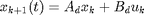

Contents
%************************************************************************** % Observer-Controler design of Inverted Pendulum % %************************************************************************** clear all %**************************************************************************
Pendulum modelling (see the Quanser documents)
%************************************************************************** T_ech=0.01 % sampling period Rm = 2.6; Kt = .00767; % Motor Torque Constant (N.m/A) Km = .00767; % Motor Back-EMF Constant (V.s/rd) g=9.81; % Internal Gear Ratio (of the Planetary Gearbox) L = 0.335 / 2; % Length of Pendulum centre of mass (meters) m = 0.125; % Mass of Pendulum (kg) r = 0.158; Jm = 3.9e-7 Jtach = 7e-8 Jmotor = Jm + Jtach; % External Gears Inertias (kg.m^2) % J24: 24-tooth Gear Inertia (on the Motor Shaft) m24 = .005; % mass (kg) r24 = 0.5 / 2 * 0.0254; % radius (m) J24 = m24 * r24^2 / 2; % J72: 72-tooth Gear Inertia (on the Potentiometer Shaft) m72 = .030; % mass (kg) r72 = 1.5 / 2 * 0.0254; % radius (m) J72 = m72 * r72^2 / 2; % J120: 120-tooth Gear Inertia (on the Load Shaft) m120 = .083; % mass (kg) r120 = 2.5 / 2 * 0.0254; % radius (m) J120 = m120 * r120^2 / 2;
T_ech =
0.0100
Jm =
3.9000e-07
Jtach =
7.0000e-08
Kgi = 14;
Beq = 4e-3;
Kge = 5;
Kg = Kgi * Kge;
Jeq = J24 + 2 * J72 + J120 + Kg^2 * Jmotor
% Intermediary parameters
a = Jeq + m*r^2;
b = m*r*L;
c = 4/3 * m*L^2;
d = m*g*L;
E = a*c - b^2;
P = Kt*Kg;
G = (P*Km*Kg + Beq*Rm) / Rm;
A = zeros (4,4);
B = zeros (4,1);
C = zeros (2,4);
D = zeros (4,1);
A(1,3) = 1;
A(2,4) = 1;
A(3,2) = b*d / E;
A(3,3) = -G*c / E;
A(4,2) = a*d / E;
A(4,3) = -G*b / E;
B(3,1) = c*P / (E*Rm);
B(4,1) = b*P / (E*Rm);
C=[1 0 0 0;
0 1 0 0];
D=[ 0 0 ]';
Jeq =
0.0023
Feedback System Dynamics
Order of system is four and we have one input signal two output signals transfer function is a matrix of (2X1) We can consider it as a system of second order followed by two systems of first oredr . Please note the eigenvalues of state matrix A which give us information on its proper dynamic necessary to respect. In the following we give some specifications on the desired feedback system dynamic. Overshoot  \\
\\
Feedback System Specification
- Response time of
![$$ \Rightarrow t_s=2.2 [sec] $$](Synthese_Pendule_IMC_eq46960.png)
- Desired dominant poles :
- Poles of aperiodic polynomials (fast dynamic): p3=-38, p4=-38.0001

%************************************************************************** pole_max=min(eig(A)) % on identifie la dynamique maximale du système afin de placer les pôles en boucle fermée actioneurs Mp=0.15; % Overshoot ts=2.2; % Response time z=-log(Mp)/(sqrt(log(Mp)^2+pi^2)); % damping coefficient wn=-log(0.02)/(ts*z); % proper frequency sd=z*wn; % real part of dominant poles wd=wn^(1-z^2); % imaginary part of dominant poles p1=-sd+i*wd; % first dominant pole of feedback loop p2=-sd-i*wd; % second dominant pole of feedback loop p3=pole_max; % fast dynamic pole p4=pole_max+0.0001; % fast dynamic pole Pc=[p1 p2 p3 p4]; % Vector of feedback loop
pole_max = -38.1125
Design of the Observer/Controler: Continuous case
- open loop state space model
 control signal ( we supose that the system state is mesurable which will be relaxed in the following )
control signal ( we supose that the system state is mesurable which will be relaxed in the following )- observer equations
- Controller Equation
- Replacing the controller equation to the observer one gives: Observer Equation
%************************************************************************** Kc=place(A,B,Pc); % corresponding feedback gains Po=5*Pc % Observer poles Ko=place(A',C',Po); Ko=Ko'; % Observer feedback gains Ao=A-B*Kc-Ko*C % Observer state matrix Bo=Ko % Observer control matrix Co=eye(4,4) % Observer output matrix Do=zeros(4,2) % Observer output/control matrix X0=[0 0 0 0]'; % %**************************************************************************
Po =
1.0e+02 *
-0.0889 + 0.1236i -0.0889 - 0.1236i -1.9056 -1.9056
Ao =
1.0e+03 *
-0.1854 0.0362 0.0010 0
0.0073 -0.1763 0 0.0010
1.0998 2.5578 0.1337 -0.3018
1.4711 -0.3526 0.0946 -0.2135
Bo =
1.0e+03 *
0.1854 -0.0362
-0.0073 0.1763
-0.7930 -5.5030
-1.2540 -1.6871
Co =
1 0 0 0
0 1 0 0
0 0 1 0
0 0 0 1
Do =
0 0
0 0
0 0
0 0
Design of the Observer/Controler: Distcrete case
-  open loop state space model
- control signal (we supose that the system state is mesurable which will be relaxed in the following)
- observer equations
- controller equations
- Replacing the controller equation to the observer one gives:
%**************************************************************************
[Ad,Bd]=c2d(A,B,T_ech); % System discretisation Cd=C; Dd=D; % %************************************************************************** %%Design of Observer/Controler: Discrete case % %************************************************************************** Pcd=exp(T_ech*Pc); % Controler pole matching Pod=exp(T_ech*Po); % Obsrver pole matching Kc_d=place(Ad,Bd,Pcd); % Controler feedback gain ->discrete case Ko_d=place(Ad',Cd',Pod); % Observer feedback gains Ko_d=Ko_d'; Aod=Ad-Bd*Kc_d-Ko_d*Cd; Bod=Ko_d; Cod=-Kc_d; Dod=zeros(1,2);